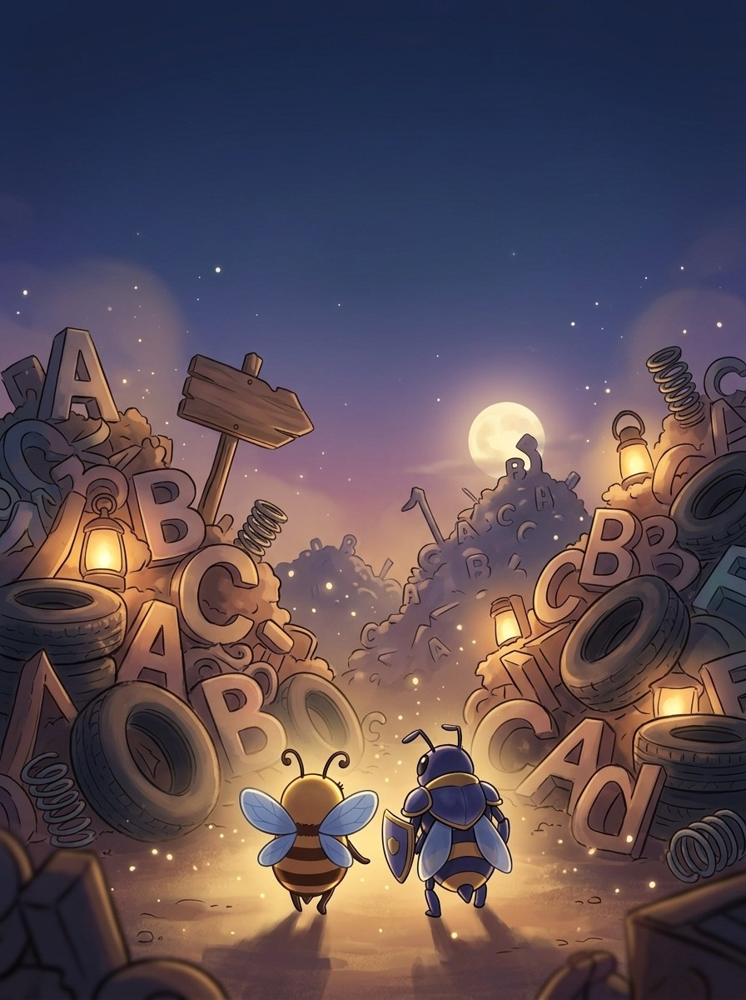
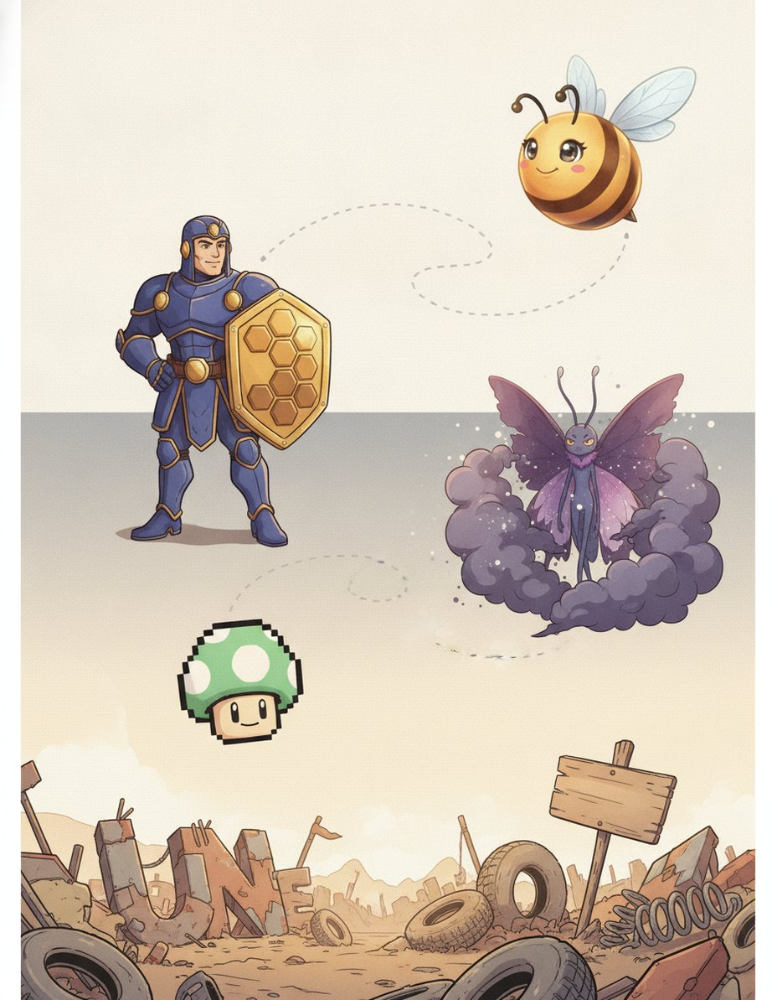
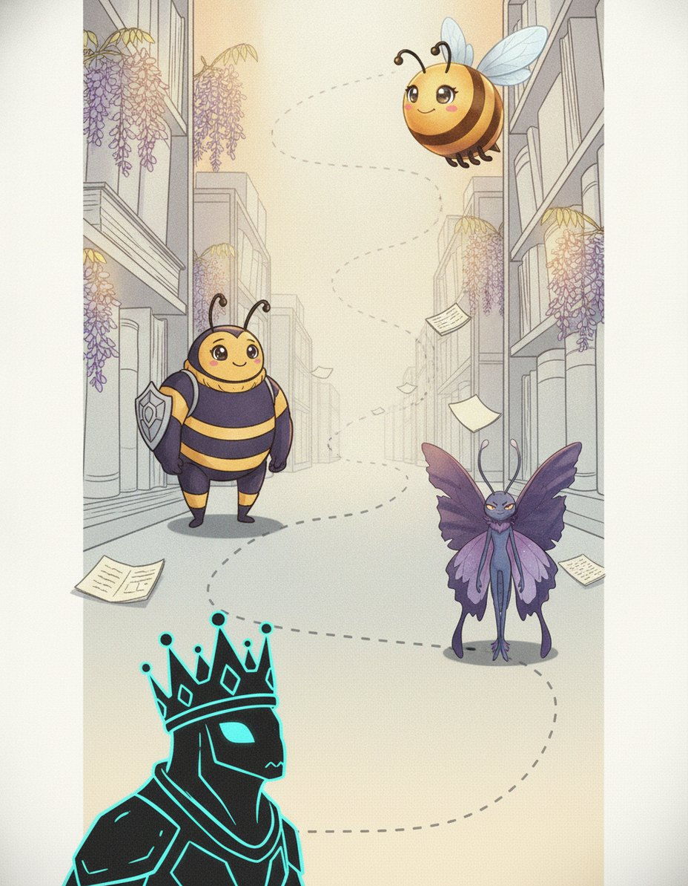

I'm Propolis. Doubles, silents and sounds that lie. Nothing in this book is filler — if a page is here, a real speller lost a real word without it.
1
Read the story
Each chapter opens as a storyboard. Vex sets the trap; the crew talks you out of it.
2
Steal the pro move
The dark box is how a champion thinks on stage. It works on brand-new words too.
3
Spell out loud, then write
Say it, spell it aloud, write it. The order matters — it is how the stage will ask for it.
4
Pass the checkpoint
A short quiz on the chapter, gated at 90%. Circle your answers, then verify at the back.
5
Play the game, then revise
Every chapter ends with a fun game, answer key at the back. Revise all words at the end and circle the ones you can spell and define.
Bizzing Bee · Letters Behaving Badly1
Letters Behaving BadlyThe cast
Bizzy — and this book's guide, Propolis
The crew of Vol. 13
The ensemble for this volume. They host the drills and checkpoints; the work is still yours.
Bizzy — The little bee who spells the world back together, one petal at a time. · Propolis — The hive’s healer and handy-bee.
1-UP
OVR 76
Champion of the Arcade
One more life, one more word — never game over.
Mech
OVR 70
Champion of the Speedway
A giant machine with a spelling heart.
Cabinet Ghost
OVR 66
Speller of the Arcade
Haunts the maze, chasing the next word.
Striker
OVR 52
Speller of the Speedway
Always first to the finish line.
D-Pad
OVR 52
Speller of the Arcade
Up, down, left, right — always knows the way.
Hover
OVR 69
Champion of the Speedway
No wheels, no limits.
Neon King
OVR 79
Grandmaster of the Arcade
Rules the arcade in electric light.
Rally
OVR 57
Rookie of the Speedway
Reads the road and never misses a turn.
And the other one
Vex, the word-moth. Every trap in this book is one it has watched a speller fall into on a real stage.
Bizzing Bee · Letters Behaving Badly2

WELCOME TO
The Word Junkyard
Back to the Junkyard — this time for the letters that lie, double and vanish.
Bizzing Bee · Letters Behaving Badly3

1Advanced Orthography · the Word JunkyardSilent finishes — words ending -gm and -gn
BizzyA letter you cannot hear
VexTwo words where the test fails
1-UPAdd a suffix and the g speaks
D-PadThe Greek -gm words
♫ narratedturn the page — the whole trick, explained →
4
Chapter 1 · Silent finishes — words ending -gm and -gnThe idea · ★★★
The big idea
A small set of words ends in a written g you cannot hear: paradigm, phlegm, benign, campaign, impugn. The g is not decoration — it was pronounced in Latin and Greek, and it comes back the moment a suffix is added. That is the whole strategy for this pattern.
The pro move
PARADIGM
Heard. PAIR-uh-dime — the final g is silent
Test. say the adjective — paradigmatic, and the g comes back
Verdict. the audible g in the relative proves the silent g in the base
Spell. P A R A D I G M
Family. paradigmatic, paradigmatically
The derivative test
This is the only tool you need. Paradigm hides its g, but paradigmatic says it. Phlegm hides it, phlegmatic says it. Diaphragm hides it, diaphragmatic says it. Malign hides it, malignant says it.
The -gm group
The -gm words are Greek
Vex alert
The g is silent at the end but speaks again when a suffix follows: paradigm but paradigmatic
Sound trap
deign sounds like dane · feign sounds like fain, foehn — at the mic, always ask for the meaning.
Check yourself
Book closed: paradigm · diaphragm · apothegm, out loud, full words. At this level, almost right is still an elimination.
Bizzing Bee · Letters Behaving Badly5
Chapter 1 · Silent finishes — words ending -gm and -gnPractice · ★★★
Say it. Spell it out loud. Write it.
paradigm
/ PEH-ruh-deyem / · /ˈpɛrədaɪm/
systematic arrangement of all the inflected forms of a word
hook: The g is silent at the end but speaks again when a suffix follows: paradigm but paradigmatic, malign but malignant.
Our grammar book shows the full ▁▁▁ of the verb, listing every changed form.
diaphragm
/ d-AY-uh-f-r-a-m / · /dˈeɪəfræm/
a part of the human body
hook: The g is silent at the end but speaks again when a suffix follows: paradigm but paradigmatic, malign but malignant.
The new cameras adjust the ▁▁▁ automatically.
apothegm
/ AP-uh-them / · /ˈæpəθɛm/
a short pithy instructive saying
hook: The g is silent at the end but speaks again when a suffix follows: paradigm but paradigmatic, malign but malignant.
Benjamin Franklin was famous for crafting an ▁▁▁ that could teach a lesson in just a few clever words.
phlegm
/ FLEHM / · /ˈflɛm/
apathy demonstrated by an absence of emotional reactions
hook: The g is silent at the end but speaks again when a suffix follows: paradigm but paradigmatic, malign but malignant.
borborygm
/ BOR-boh-rigm / · /ˈbɔrboʊrɪɡm/
A rumbling or gurgling noise produced by gas moving through the intestines; the technical term for what is commonly called a stomach growl.
hook: The g is silent at the end but speaks again when a suffix follows: paradigm but paradigmatic, malign but malignant.
During the completely silent exam, the student's loud ▁▁▁ echoed through the room, causing several classmates to look up from their papers with poorly concealed amusement.
benign
/ b-ih-n-AY-n / · /bɪnˈeɪn/
is having a kindly disposition
hook: The g is silent at the end but speaks again when a suffix follows: paradigm but paradigmatic, malign but malignant.
The doctor reassured the worried family that the small growth was completely ▁▁▁, explaining that it posed no threat to the patient's health and required no further treatment whatsoever.
Bizzing Bee · Letters Behaving Badly6
Chapter 1 · Silent finishes — words ending -gm and -gnPractice · ★★★
Say it. Spell it out loud. Write it.
malign
/ m-uh-l-AY-n / · /məlˈeɪn/
is to speak harmful untruths about
hook: The g is silent at the end but speaks again when a suffix follows: paradigm but paradigmatic, malign but malignant.
It is never kind to ▁▁▁ a classmate with rumors that aren't true.
condign
/ kun-DYNE / · /kʌnˈdaɪnɛ/
fitting or appropriate and deserved; used especially of punishment
hook: The g is silent at the end but speaks again when a suffix follows: paradigm but paradigmatic, malign but malignant.
The judge delivered ▁▁▁ punishment to the swindler who had robbed dozens of elderly victims.
deign
/ d-AY-n / · /dˈeɪn/
to think fit or to condescend
hook: The g is silent at the end but speaks again when a suffix follows: paradigm but paradigmatic, malign but malignant.
The famous chef did not ▁▁▁ to answer questions from food bloggers he considered beneath his level of expertise.
feign
/ f-AY-n / · /fˈeɪn/
is to represent fictitiously
hook: The g is silent at the end but speaks again when a suffix follows: paradigm but paradigmatic, malign but malignant.
He ▁▁▁ that he was ill.
impugn
/ ih-MPYOON / · /ɪˈmpjun/
attack as false or wrong
hook: The g is silent at the end but speaks again when a suffix follows: paradigm but paradigmatic, malign but malignant.
The defense lawyer tried to ▁▁▁ the witness's testimony by pointing out several contradictions.
oppugn
/ uh-PYOON / · /əˈpjun/
challenge the accuracy, probity, or propriety of
hook: The g is silent at the end but speaks again when a suffix follows: paradigm but paradigmatic, malign but malignant.
The defense attorney rose to ▁▁▁ every claim the witness made, pointing out inconsistencies in the testimony.
Bizzing Bee · Letters Behaving Badly7
Chapter 1 · Silent finishes — words ending -gm and -gnRapid round · ★★★
More ammo — one line each.
eloign/ih-LOIN/ To remove or carry away to a distance; in legal contexts, to convey property or a person beyond the jurisdiction of a court to prevent seizure or process.
arraign/er-AYN/ call before a court to answer an indictment
campaign/k-a-m-p-AY-n/ a military operation for a specific objective
ensign/EH-n-s-uh-n/ a flag or banner
countersign/KOWN-ter-syne/ a secret word or phrase known only to a restricted group
sovereign/s-AH-v-r-uh-n/ a monarch or a king
foreign/FAW-ruhn/ of concern to or concerning the affairs of other nations (other than your own)
reassign/ree-uh-SEYEN/ transfer somebody to a different position or location of work
Lock them in
Pick 4 words from above. Say each one as you write it — three times, no shortcuts. The third copy is the one your hand remembers.
Bizzing Bee · Letters Behaving Badly8
Chapter 1 · Silent finishes — words ending -gm and -gnCheckpoint · ★★★
Cabinet Ghost · Speller of the Arcade runs the checkpoint
Do you own the idea?
This checkpoint is gated at 90% — five of six, minimum. Circle, then verify at the back. Cabinet Ghost's power is Power Core — borrow it.
1. What does oppugn mean?
Achallenge the accuracy, probity, or propriety of
Ba monarch or a king
Cof concern to or concerning the affairs of other nations (other than your own)
Dis to represent fictitiously
2. What does reassign mean?
Aa military operation for a specific objective
Btransfer somebody to a different position or location of work
CA rumbling or gurgling noise produced by gas moving through the intestines; the technical term for what is commonly called a stomach growl.
Da short pithy instructive saying
3. Which spelling is correct?
Afiegn
Bfiign
Cfeiggn
Dfeign
4. Which word fills the gap? “The defense attorney rose to ▁▁▁ every claim the witness made, pointing out inconsistencies in the testimony.”
Aoppugn
Bimpugn
Ccondign
Dcountersign
5. Which word belongs to this chapter’s family?
Aextemporaneous
Bgrotesque
Coppugn
Dabattoir
Dictation round
Hand this page to anyone nearby. They read the words from the answer key (Ch. 1 dictation, at the back) — you write, no peeking.
1.
2.
Bizzing Bee · Letters Behaving Badly9
Chapter 1 · Silent finishes — words ending -gm and -gnGame · ★★★
Mech's puzzle page
Crossword
1
2
3
4
5
6
7
8
9
10
Across
5. to think fit or to condescend
6. a part of the human body
8. a short pithy instructive saying
9. is to speak harmful untruths about
10. is having a kindly disposition
Down
1. A rumbling or gurgling noise produced by gas moving through the intestines
2. fitting or appropriate and deserved; used especially of punishment
3. is to represent fictitiously
4. systematic arrangement of all the inflected forms of a word
7. apathy demonstrated by an absence of emotional reactions
Bizzing Bee · Letters Behaving Badly10
2Advanced Orthography · the Vibe-cide — the killing words
BizzyA Latin verb about cutting down
PropolisThe long one
VexThe joint is i, not a
HoverThe victim is in the root
♫ narratedturn the page — the whole trick, explained →
11
Chapter 2 · -cide — the killing wordsThe idea · ★★★
The big idea
Latin caedere meant to cut down, and by extension to kill. English uses -cide both for the act and for the agent that does it, joined to the root with an i. The adjective is regularly -cidal.
The pro move
MOLLUSCICIDE
Heard. muh-LUSS-ih-side — a substance that kills molluscs
Parse. mollusc + i + cide
Trap. the c of mollusc stays, so there are two c letters before the ending
Spell. M O L L U S C I C I D E
Family. molluscicidal, mollusc, molluscan
Agent or act
The same ending does two jobs. As an act: regicide the killing of a king, matricide of a mother, patricide of a father, parricide of a close relative, fratricide of a brother, liberticide of liberty.
The joint is i
Latin joined the root to caedere with an i, and that i is the letter to watch. Herbicide, not herbacide. Fungicide, not fungacide. Larvicide, not larvacide. Acaricide, from acarus, a mite.
Vex alert
Latin caedere = to cut down or kill. The joint is i, the noun is -cide, the adjective -cidal.
Sound trap
larvicide sounds like larvacide — at the mic, always ask for the meaning.
Check yourself
Book closed: molluscicide · liberticide · parasiticide, out loud, full words. At this level, almost right is still an elimination.
Bizzing Bee · Letters Behaving Badly12
Chapter 2 · -cide — the killing wordsPractice · ★★★
Say it. Spell it out loud. Write it.
molluscicide
/ moh-LUS-ih-syd / · /moʊˈlʌsɪsaɪd/
A chemical substance or agent used to kill mollusks, such as snails and slugs, particularly those that damage crops or transmit disease.
hook: Latin caedere = to cut down or kill. The joint is i, the noun is -cide, the adjective -cidal.
The farmer applied a ▁▁▁ to the garden to protect his crops from slugs and snails.
liberticide
/ lih-BER-tih-syd / · /lɪˈbərtɪsaɪd/
The destruction or killing of liberty; also, a person who destroys or suppresses the freedoms and rights of others through tyrannical or oppressive actions.
hook: Latin caedere = to cut down or kill. The joint is i, the noun is -cide, the adjective -cidal.
The historian called the oppressive new law a ▁▁▁ that crushed the citizens' basic freedoms.
parasiticide
/ pair-uh-SIT-ih-syd / · /pɛrəˈsɪtɪsaɪd/
A substance or agent that destroys parasites; any chemical, drug, or treatment used to kill parasitic organisms living on or within a host organism.
hook: Latin caedere = to cut down or kill. The joint is i, the noun is -cide, the adjective -cidal.
The veterinarian prescribed a ▁▁▁ to rid the dog of fleas and ticks.
cancericidal
/ kan-SAIR-ih-SY-dul / · /kænˈsɛrɪˌsaɪdʌl/
Capable of destroying or killing cancer cells; describing an agent or treatment that acts directly against cancerous growth.
hook: Latin caedere = to cut down or kill. The joint is i, the noun is -cide, the adjective -cidal.
Researchers were excited to discover that the new compound had powerful ▁▁▁ properties in laboratory tests on tumor cells.
barmecidal
/ bar-mih-SY-duhl / · /bɑrmɪˈsaɪdəl/
generous in appearance but giving nothing at all
hook: Latin caedere = to cut down or kill. The joint is i, the noun is -cide, the adjective -cidal.
The offer turned out to be ▁▁▁.
monosilicide
/ mon-oh-SIL-ih-syd / · /mɑnoʊˈsɪlɪsaɪd/
a compound of one silicon atom joined to one metal atom
hook: Latin caedere = to cut down or kill. The joint is i, the noun is -cide, the adjective -cidal.
Engineers used ▁▁▁ coatings to protect the surface of the microchip from heat damage.
Bizzing Bee · Letters Behaving Badly13
Chapter 2 · -cide — the killing wordsPractice · ★★★
Say it. Spell it out loud. Write it.
insecticide
/ ih-NSEH-ktuh-seyed / · /ɪˈnsɛktəsaɪd/
a chemical used to kill insects
hook: Latin caedere = to cut down or kill. The joint is i, the noun is -cide, the adjective -cidal.
The farmer sprayed ▁▁▁ on the crops to protect them from the swarms of beetles.
pesticide
/ p-EH-s-t-uh-s-ay-d / · /pˈɛstəseɪd/
a chemical preparation to destroy pests
hook: Latin caedere = to cut down or kill. The joint is i, the noun is -cide, the adjective -cidal.
The farmer carefully applied ▁▁▁ to protect his crops from the destructive beetles.
acaricide
/ uh-KAR-ih-syd / · /əˈkɑrɪsaɪd/
a chemical agent used to kill mites
hook: Latin caedere = to cut down or kill. The joint is i, the noun is -cide, the adjective -cidal.
The farmer applied an ▁▁▁ to protect the apple trees from a damaging mite outbreak.
vermicide
/ VUR-mih-syd / · /ˈvʌrmɪsaɪd/
an agent that kills worms (especially those in the intestines)
hook: Latin caedere = to cut down or kill. The joint is i, the noun is -cide, the adjective -cidal.
The veterinarian prescribed a ▁▁▁ to rid the puppy of the roundworms living in its intestines.
fungicide
/ FUH-njuh-seyed / · /ˈfʌndʒəsaɪd/
any agent that destroys or prevents the growth of fungi
hook: Latin caedere = to cut down or kill. The joint is i, the noun is -cide, the adjective -cidal.
The farmer sprayed a powerful ▁▁▁ on his grape vines to prevent mold from ruining the harvest.
germicide
/ JUR-muh-seyed / · /ˈdʒʌrməsaɪd/
an agent (as heat or radiation or a chemical) that destroys microorganisms that might carry disease
hook: Latin caedere = to cut down or kill. The joint is i, the noun is -cide, the adjective -cidal.
The nurse wiped the counter with a powerful ▁▁▁ to ensure no harmful bacteria could survive.
3Advanced Orthography · the Big Stage-phagous and -phagy — the eating words
BizzyOne Greek verb, four endings
PropolisChoosing between the four
VexGreek phi is always ph
Neon KingThe root is the menu
♫ narratedturn the page — the whole trick, explained →
18
Chapter 3 · -phagous and -phagy — the eating wordsThe idea · ★★★
The big idea
Greek phagein, to eat, produces a family of four related endings that spellers routinely swap. The adjective describing a diet is -phagous. The name of the habit is -phagy. A medical condition of swallowing is -phagia. A thing that eats is -phage.
The pro move
MYRMECOPHAGY
Heard. mur-muh-COFF-uh-jee — the habit of eating ants
Parse. myrmex = ant, plus o, plus phagy = eating
Rule. the f sound is p h; the habit ends -phagy
Spell. M Y R M E C O P H A G Y
Family. myrmecophagous, myrmecophage, myrmecology
Four endings, four jobs
-phagous is the adjective: saprophagous eats decaying matter, arachnophagous eats spiders, geophagous eats earth. -phagy is the habit: entomophagy, mycophagy, geophagy, autophagy.
The ph is not optional
Greek phi is always written p-h in English, never f. Phagein, phone, photo, physics, philosophy, sphere, graph. So the eating words are phagous and phagy, never fagous or fagy.
Vex alert
Greek phagein = to eat.
Check yourself
Book closed: myrmecophagy · myrmecophage · arachnophagous, out loud, full words. At this level, almost right is still an elimination.
Bizzing Bee · Letters Behaving Badly19
Chapter 3 · -phagous and -phagy — the eating wordsPractice · ★★★
Say it. Spell it out loud. Write it.
myrmecophagy
/ mur-meh-KOF-uh-jee / · /mʌrmɛˈkɑfədʒi/
The dietary practice or habit of feeding on ants, characteristic of various animals such as anteaters, pangolins, and aardvarks that have evolved to consume ants as a primary food source.
hook: Greek phagein = to eat. Adjective -phagous, the habit -phagy, a disorder -phagia, an eater -phage. The ph is a Greek phi, never f.
▁▁▁ is a fascinating dietary strategy shared by animals as different as pangolins and echidnas.
myrmecophage
/ MUR-meh-koh-fayj / · /ˈmʌrmɛkoʊfeɪdʒ/
An animal that feeds primarily or exclusively on ants and termites, such as an anteater or aardvark, equipped with specialized adaptations for this diet.
hook: Greek phagein = to eat. Adjective -phagous, the habit -phagy, a disorder -phagia, an eater -phage. The ph is a Greek phi, never f.
The anteater is the most famous ▁▁▁, using its long sticky tongue to devour thousands of ants daily.
arachnophagous
/ uh-RAK-nuh-fay-guhs / · /əˈræknəfeɪɡəs/
Describing an organism that feeds on spiders and other arachnids as a regular part of its diet.
hook: Greek phagein = to eat. Adjective -phagous, the habit -phagy, a disorder -phagia, an eater -phage. The ph is a Greek phi, never f.
The peculiar ▁▁▁ lizard darted across the desert sand, snapping up every spider in its path.
saprophagous
/ sap-ROF-ah-gus / · /sæpˈrɑfɑɡʌs/
(of certain animals) feeding on dead or decaying animal matter
hook: Greek phagein = to eat. Adjective -phagous, the habit -phagy, a disorder -phagia, an eater -phage. The ph is a Greek phi, never f.
Vultures are ▁▁▁ creatures that clean up carcasses left on the savanna.
entomophagy
/ en-toh-MOF-uh-jee / · /ɛntoʊˈmɑfədʒi/
The practice of eating insects as food, which is common in many cultures around the world and is increasingly studied as a sustainable protein source.
hook: Greek phagein = to eat. Adjective -phagous, the habit -phagy, a disorder -phagia, an eater -phage. The ph is a Greek phi, never f.
Advocates of ▁▁▁ argue that eating insects is a sustainable protein source that could help feed a growing global population.
heterophagy
/ het-er-OF-uh-jee / · /hɛtərˈɑfədʒi/
The process by which a cell digests material taken in from outside itself, such as food particles or foreign bodies, by enclosing them in a membrane-bound sac called a phagosome.
hook: Greek phagein = to eat. Adjective -phagous, the habit -phagy, a disorder -phagia, an eater -phage. The ph is a Greek phi, never f.
During ▁▁▁, a cell digests material it has absorbed from outside itself rather than from its own components.
Bizzing Bee · Letters Behaving Badly20
Chapter 3 · -phagous and -phagy — the eating wordsPractice · ★★★
Say it. Spell it out loud. Write it.
glottophagy
/ glot-OF-uh-jee / · /ɡlɑtˈɑfədʒi/
The process by which dominant languages absorb, suppress, or cause the extinction of smaller or minority languages, metaphorically described as one language eating another.
hook: Greek phagein = to eat. Adjective -phagous, the habit -phagy, a disorder -phagia, an eater -phage. The ph is a Greek phi, never f.
▁▁▁ occurs when a dominant language slowly causes smaller languages to disappear.
omophagia
/ oh-moh-FAY-jee-ah / · /oʊmoʊˈfeɪdʒiɑ/
the eating of raw food
hook: Greek phagein = to eat. Adjective -phagous, the habit -phagy, a disorder -phagia, an eater -phage. The ph is a Greek phi, never f.
Ancient religious rituals sometimes involved ▁▁▁ as a symbol of primal connection to nature.
dysphagia
/ dis-FAY-jee-uh / · /dɪsˈfeɪdʒiə/
condition in which swallowing is difficult or painful
hook: Greek phagein = to eat. Adjective -phagous, the habit -phagy, a disorder -phagia, an eater -phage. The ph is a Greek phi, never f.
The elderly patient's ▁▁▁ made every meal a slow and careful challenge requiring a specially thickened diet.
mycophagy
/ my-KOF-uh-jee / · /maɪˈkɑfədʒi/
the practice of eating fungi (especially mushrooms collected in the wild)
hook: Greek phagein = to eat. Adjective -phagous, the habit -phagy, a disorder -phagia, an eater -phage. The ph is a Greek phi, never f.
Her passion for ▁▁▁ led her to spend every autumn weekend foraging for wild mushrooms.
aphagia
/ ay-FAY-jee-uh / · /eɪˈfeɪdʒiə/
loss of the ability to swallow
hook: Greek phagein = to eat. Adjective -phagous, the habit -phagy, a disorder -phagia, an eater -phage. The ph is a Greek phi, never f.
After the stroke, the patient developed ▁▁▁ and required a feeding tube to receive nutrition.
hyperphagia
/ hy-per-FAY-jee-uh / · /haɪpərˈfeɪdʒiə/
An abnormal and excessive increase in appetite and food intake, often caused by a medical condition, brain injury, or certain medications.
hook: Greek phagein = to eat. Adjective -phagous, the habit -phagy, a disorder -phagia, an eater -phage. The ph is a Greek phi, never f.
The neurologist explained that ▁▁▁ in some patients results from damage to the hypothalamus, the brain region that normally signals when a person is full.
Bizzing Bee · Letters Behaving Badly21
Chapter 3 · -phagous and -phagy — the eating wordsRapid round · ★★★
More ammo — one line each.
autophagy/aw-TOF-uh-jee/ The biological process by which a cell breaks down and recycles its own damaged or unnecessary components.
macrophage/MA-kroh-fayj/ a large phagocyte; some are fixed and other circulate in the blood stream
geophagia/jee-oh-FAY-jee-uh/ eating earth, clay, chalk; occurs in some primitive tribes, sometimes in cases of nutritional deficiency or obsessive behavior
coliphage/KOH-lih-fayj/ a bacteriophage that infects the bacterium Escherichia coli
geophagy/jee-OF-uh-jee/ eating earth, clay, chalk; occurs in some primitive tribes, sometimes in cases of nutritional deficiency or obsessive behavior
oligophagy/ol-ih-GOF-ah-jee/ The habit or condition of feeding on only a limited variety of foods, particularly in animals or insects that are restricted to eating just a few specific plant species or food types.
ophiophagy/oh-fee-OF-ah-jee/ The practice or habit of eating snakes, whether by animals such as secretary birds and mongooses, or in certain human cultural practices.
xerophagy/zeer-OF-ah-jee/ A strict religious diet of only dry, uncooked food and water.
Lock them in
Pick 4 words from above. Say each one as you write it — three times, no shortcuts. The third copy is the one your hand remembers.
Bizzing Bee · Letters Behaving Badly22
Chapter 3 · -phagous and -phagy — the eating wordsCheckpoint · ★★★
D-Pad · Speller of the Arcade runs the checkpoint
Do you own the idea?
This checkpoint is gated at 90% — five of six, minimum. Circle, then verify at the back. D-Pad's power is Unflappable — borrow it.
1. What does coliphage mean?
Aa large phagocyte; some are fixed and other circulate in the blood stream
BThe biological process by which a cell breaks down and recycles its own damaged or unnecessary components.
Ceating earth, clay, chalk; occurs in some primitive tribes, sometimes in cases of nutritional deficiency or obsessive behavior
Da bacteriophage that infects the bacterium Escherichia coli
2. What does ophiophagy mean?
AThe practice or habit of eating snakes, whether by animals such as secretary birds and mongooses, or in certain human cultural practices.
BA strict religious diet of only dry, uncooked food and water.
C(of certain animals) feeding on dead or decaying animal matter
DDescribing an organism that feeds on spiders and other arachnids as a regular part of its diet.
3. “Greek phagein = to eat. Adjective -phagous, the habit -phagy, a disorder -phagia, an eater -phage. The ph is a Greek phi, never f.” — which word is that about?
Ageophagia
Bmyrmecophagy
Chyperphagia
Dcoliphage
4. Which word fills the gap? “Scientists used a ▁▁▁ in the experiment to study how viruses attack the E. coli bacterium.”
Asaprophagous
Barachnophagous
Cgeophagy
Dcoliphage
Dictation round
Hand this page to anyone nearby. They read the words from the answer key (Ch. 3 dictation, at the back) — you write, no peeking.
1.
2.
Bizzing Bee · Letters Behaving Badly23
Chapter 3 · -phagous and -phagy — the eating wordsGame · ★★★
Striker's puzzle page
Scramble & rescue
Unscramble
ghyapopiho
saupgarhspoo
higyepapahr
orpagmheac
hapgogoliy
ryegcpemmhao
Rescue the vowels
__t_ph_gy
x_r_ph_gy
myc_ph_gy
gl_tt_ph_gy
_l_g_ph_gy
myrm_c_ph_gy
Bizzing Bee · Letters Behaving Badly24
4Advanced Orthography · the Proving Ground-latry — worship of anything
BizzyGreek for service and worship
PropolisThree forms, one vowel change
VexWhy idolatry has one l
RallyWhat people have worshipped
♫ narratedturn the page — the whole trick, explained →
25
Chapter 4 · -latry — worship of anythingThe idea · ★★★
The big idea
Greek latreia meant service, especially religious service, and English uses -latry to name the worship of whatever is in the root. It is a compact and very regular family: joint of o, adjective in -latrous, worshipper in -later.
The pro move
ICHTHYOLATRY
Heard. ick-thee-OL-uh-tree — worship of fish
Parse. ichthys = fish, plus o, plus latreia = worship
Trap. ichthys begins i-c-h-t-h — two h letters, both silent-ish
Spell. I C H T H Y O L A T R Y
Family. ichthyolatrous, ichthyology, ichthyosaur
The three forms
The practice is -latry: idolatry, zoolatry, pyrolatry, bardolatry. The adjective is -latrous: idolatrous, monolatrous, ichthyolatrous. The person is -later: idolater.
The objects of worship
The root is what is worshipped. Eidolon an image gives idolatry. Zoon an animal gives zoolatry. Pyr fire gives pyrolatry. Ichthys fish gives ichthyolatry. Helios sun gives heliolatry.
Vex alert
Greek latreia = worship or service.
Check yourself
Book closed: ichthyolatry · martyrolatry · demonolatry, out loud, full words. At this level, almost right is still an elimination.
Bizzing Bee · Letters Behaving Badly26
Chapter 4 · -latry — worship of anythingPractice · ★★★
Say it. Spell it out loud. Write it.
ichthyolatry
/ ik-thee-OL-uh-tree / · /ɪkθiˈɑlətri/
the worship of fish
hook: Greek latreia = worship or service. The joint is o, the worshipper is -later, the adjective -latrous.
The ancient coastal tribe practiced ▁▁▁, holding elaborate ceremonies to honor the sacred fish gods.
martyrolatry
/ mar-tih-ROL-ah-tree / · /mɑrtɪˈrɑlɑtri/
The excessive veneration or worship of martyrs, often criticized as going beyond proper religious honor into idolatrous devotion.
hook: Greek latreia = worship or service. The joint is o, the worshipper is -later, the adjective -latrous.
Church reformers warned that ▁▁▁ had replaced genuine faith in some communities where shrines to martyrs outnumbered ordinary chapels.
demonolatry
/ deh-mon-OL-uh-tree / · /dɛmɑnˈɑlətri/
the acts or rites of worshiping devils
hook: Greek latreia = worship or service. The joint is o, the worshipper is -later, the adjective -latrous.
The ancient text described ▁▁▁ as a forbidden practice that whole villages once feared.
bardolatry
/ bar-DOL-uh-tree / · /bɑrˈdɑlətri/
the idolization of William Shakespeare
hook: Greek latreia = worship or service. The joint is o, the worshipper is -later, the adjective -latrous.
The professor warned his students that ▁▁▁ could cloud their ability to critically analyze Shakespeare's flaws as a writer.
idolatrous
/ eye-DAH-luh-truhs / · /aɪˈdɑlətrəs/
relating to or practicing idolatry
hook: Greek latreia = worship or service. The joint is o, the worshipper is -later, the adjective -latrous.
The ancient tribe was condemned by the prophet for its ▁▁▁ practices, which included bowing before golden statues and offering elaborate sacrifices to carved figures made of wood and stone.
idiolatry
/ id-ee-OL-uh-tree / · /ɪdiˈɑlətri/
the worship of yourself
hook: Greek latreia = worship or service. The joint is o, the worshipper is -later, the adjective -latrous.
His constant selfies and self-praise bordered on ▁▁▁, making his friends uncomfortable.
Bizzing Bee · Letters Behaving Badly27
Chapter 4 · -latry — worship of anythingPractice · ★★★
Say it. Spell it out loud. Write it.
autolatry
/ aw-TOL-uh-tree / · /ɔˈtɑlətri/
the worship of yourself
hook: Greek latreia = worship or service. The joint is o, the worshipper is -later, the adjective -latrous.
His friends joked that his constant selfies and mirror-gazing had crossed the line into pure ▁▁▁.
monolatry
/ moh-NOL-ah-tree / · /moʊˈnɑlɑtri/
the worship of a single god but without claiming that it is the only god
hook: Greek latreia = worship or service. The joint is o, the worshipper is -later, the adjective -latrous.
Some scholars argue that early Israelite religion was a form of ▁▁▁ before becoming strict monotheism.
pyrolatry
/ py-ROL-uh-tree / · /paɪˈrɑlətri/
the worship of fire
hook: Greek latreia = worship or service. The joint is o, the worshipper is -later, the adjective -latrous.
Ancient tribes practiced ▁▁▁, believing flames connected them to the gods.
zoolatry
/ zoh-OL-uh-tree / · /zoʊˈɑlətri/
the worship of animals
hook: Greek latreia = worship or service. The joint is o, the worshipper is -later, the adjective -latrous.
Ancient Egyptian religion included elements of ▁▁▁, as gods like Anubis and Bastet were depicted with the heads of animals.
idolatry
/ eye-DAH-luh-tree / · /aɪˈdɑlətri/
religious zeal; the willingness to serve God
hook: Greek latreia = worship or service. The joint is o, the worshipper is -later, the adjective -latrous.
Ancient prophets warned their people against ▁▁▁, urging them to abandon the worship of carved stone figures.
idolater
/ eye-DOL-uh-ter / · /aɪˈdɑlətər/
a person who worships idols
hook: Greek latreia = worship or service. The joint is o, the worshipper is -later, the adjective -latrous.
The ancient text described how the ▁▁▁ bowed before a golden statue each morning at sunrise.
heliolatry/hee-lee-OL-uh-tree/ the worship of the sun
litholatry/lih-THOL-ah-tree/ The worship of stones or rocks, practiced in certain ancient or indigenous religions that regarded particular stones as sacred or divine objects.
necrolatry/neh-KROL-uh-tree/ The worship of or excessive reverence for the dead, including rituals, practices, or beliefs centered on honoring deceased individuals as sacred.
cynolatry/sy-NOL-uh-tree/ The worship or excessive devotion to dogs, treating them as sacred or divine beings; extreme reverence for dogs beyond what is considered ordinary affection.
hierolatry/hy-er-OL-ah-tree/ the worship of saints
goniolatry/goh-nee-OL-uh-tree/ The worship of or excessive reverence for angles; an obsessive devotion to geometric angles, used humorously or critically to describe an extreme focus on angular measurement.
electroplater/ih-LEK-troh-play-ter/ a plater who uses electrolysis
desolater/DEZ-uh-lay-ter/ providing no shelter or sustenance
Lock them in
Pick 4 words from above. Say each one as you write it — three times, no shortcuts. The third copy is the one your hand remembers.
Bizzing Bee · Letters Behaving Badly29
Chapter 4 · -latry — worship of anythingCheckpoint · ★★★
Hover · Champion of the Speedway runs the checkpoint
Do you own the idea?
This checkpoint is gated at 90% — five of six, minimum. Circle, then verify at the back. Hover's power is Unflappable — borrow it.
1. What does idolatry mean?
Areligious zeal; the willingness to serve God
Bthe worship of fish
Cthe acts or rites of worshiping devils
Dthe worship of saints
2. What does bardolatry mean?
Athe worship of fish
Bproviding no shelter or sustenance
Crelating to or practicing idolatry
Dthe idolization of William Shakespeare
3. Which spelling is correct?
Adesolater
Bdisolater
Cdessolater
Ddesolatar
4. Which word fills the gap? “Ancient prophets warned their people against ▁▁▁, urging them to abandon the worship of carved stone figures.”
Aidolatry
Bidolatrous
Cpyrolatry
Dheliolatry
5. Which word belongs to this chapter’s family?
Aamorphous
Bidolatry
Cdivert
Donomatopoeia
Dictation round
Hand this page to anyone nearby. They read the words from the answer key (Ch. 4 dictation, at the back) — you write, no peeking.
1.
2.
3.
Bizzing Bee · Letters Behaving Badly30
Chapter 4 · -latry — worship of anythingGame · ★★★
D-Pad's puzzle page
Crossword
1
2
3
4
5
6
Across
2. the acts or rites of worshiping devils
3. the worship of fish
4. relating to or practicing idolatry
5. the idolization of William Shakespeare
6. the worship of yourself
Down
1. The excessive veneration or worship of martyrs
Bizzing Bee · Letters Behaving Badly31
5Advanced Orthography · the Grey SeaOld English trades — monger, wright and smith
BizzyA native family for once
PropolisNo joint at all
VexA wright makes, it does not write
TokenySmith left the forge
♫ narratedturn the page — the whole trick, explained →
32
Chapter 5 · Old English trades — monger, wright and smithThe idea · ★★★
The big idea
Amid a curriculum dominated by Latin and Greek, this family is entirely native. Old English mangere meant a trader, wryhta meant a maker or worker, and smitha meant one who works metal.
The pro move
WHEELWRIGHT
Heard. WEEL-rite — a maker of wheels
Origin. Old English hweol plus wryhta, a maker
Trap. the maker ending is w-r-i-g-h-t, not r-i-t-e or w-r-i-t-e
This is the giveaway. Latin and Greek compounds need a joint — cupriferous, ochlocracy, myrmecophagy. Old English compounds simply push the two words together. Wheelwright. Playwright. Blacksmith.
-wright is not -write
A wright is a maker, from wryhta, and it is spelled w-r-i-g-h-t. A playwright makes plays; the word has nothing to do with writing them, which is why playwrite is always wrong.
Vex alert
Three native agent endings: mangere a trader, wryhta a maker, smitha a metalworker.
Check yourself
Book closed: wheelwright · playwright · cartwright, out loud, full words. At this level, almost right is still an elimination.
Bizzing Bee · Letters Behaving Badly33
Chapter 5 · Old English trades — monger, wright and smithPractice · ★★★
Say it. Spell it out loud. Write it.
wheelwright
/ w-EE-l-r-ay-t / · /wˈilreɪt/
a person whose trade is to make wheels
hook: Three native agent endings: mangere a trader, wryhta a maker, smitha a metalworker.
The village ▁▁▁ spent three days crafting the sturdy oak wheels for the farmer's new cart.
playwright
/ PLAY-reyet / · /ˈpleɪraɪt/
someone who writes plays
hook: Three native agent endings: mangere a trader, wryhta a maker, smitha a metalworker.
The young ▁▁▁ spent all summer writing a one-act comedy that her drama club would perform in the fall.
cartwright
/ KAH-rtreyet / · /ˈkɑrtraɪt/
English clergyman who invented the power loom (1743-1823)
hook: Three native agent endings: mangere a trader, wryhta a maker, smitha a metalworker.
We learned that ▁▁▁'s invention of the power loom transformed the textile industry forever.
wagonwright
/ WAG-un-ryt / · /ˈwæɡʌnraɪt/
a wagon maker
hook: Three native agent endings: mangere a trader, wryhta a maker, smitha a metalworker.
The ▁▁▁ carefully fitted iron rims onto the wooden wheels in his workshop.
coppersmith
/ KAH-per-smihth / · /ˈkɑpərsmɪθ/
someone who makes articles from copper
hook: Three native agent endings: mangere a trader, wryhta a maker, smitha a metalworker.
The colonial ▁▁▁ hammered glowing metal into pots and kettles for the townspeople.
blacksmith
/ BLA-ksmihth / · /ˈblæksmɪθ/
a smith who forges and shapes iron with a hammer and anvil
hook: Three native agent endings: mangere a trader, wryhta a maker, smitha a metalworker.
The ▁▁▁ hammered the glowing iron into a perfect horseshoe while sparks flew everywhere.
Bizzing Bee · Letters Behaving Badly34
Chapter 5 · Old English trades — monger, wright and smithPractice · ★★★
Say it. Spell it out loud. Write it.
arrowsmith
/ A-roh-smihth / · /ˈæroʊsmɪθ/
a maker of arrows
hook: Three native agent endings: mangere a trader, wryhta a maker, smitha a metalworker.
The museum exhibit featured the tools and finished work of a skilled ▁▁▁ from the medieval period.
jewelsmith
/ JOO-ul-smith / · /ˈdʒuʌlsmɪθ/
A craftsperson who makes or works with jewels and fine jewelry; a jeweler skilled in metalwork and gemstone setting.
hook: Three native agent endings: mangere a trader, wryhta a maker, smitha a metalworker.
The ▁▁▁ spent weeks crafting an intricate gold ring set with tiny sapphires.
tunesmith
/ TYOON-smith / · /ˈtjunsmɪθ/
A person who composes or writes tunes and melodies, especially popular or commercial songs; a skilled creator of memorable musical pieces, much like a wordsmith crafts memorable language.
hook: Three native agent endings: mangere a trader, wryhta a maker, smitha a metalworker.
The famous ▁▁▁ wrote over two hundred songs before he turned thirty.
jokesmith
/ JOHK-smith / · /ˈdʒoʊksmɪθ/
A person who is skilled at crafting or inventing jokes; someone who creates humor professionally or with great talent and ingenuity.
hook: Three native agent endings: mangere a trader, wryhta a maker, smitha a metalworker.
The class clown was such a skilled ▁▁▁ that he always had a perfect punchline ready.
wordsmith
/ WUR-dsmihth / · /ˈwʌrdsmɪθ/
a fluent and prolific writer
hook: Three native agent endings: mangere a trader, wryhta a maker, smitha a metalworker.
The poet was a true ▁▁▁, crafting phrases that lingered in your memory for days.
scandalmonger
/ SKAN-dl-mung-ger / · /ˈskændlmʌŋɡər/
a person who spreads malicious gossip
hook: Three native agent endings: mangere a trader, wryhta a maker, smitha a metalworker.
The neighborhood ▁▁▁ couldn't resist whispering rumors about everyone on the street.
Bizzing Bee · Letters Behaving Badly35
Chapter 5 · Old English trades — monger, wright and smithRapid round · ★★★
More ammo — one line each.
carpetmonger/KAR-pet-mung-ger/ A person who deals in or sells carpets, or one who meddles excessively in carpet trade affairs.
poisonmonger/POY-zun-mung-gur/ A person who deals in, spreads, or promotes poison, either literally or figuratively, such as someone who spreads harmful rumors or toxic ideas.
phrasemonger/FRAYZ-mung-ger/ A person who uses showy, empty, or overused phrases rather than expressing genuine or original ideas; one who deals in hollow rhetoric.
barbermonger/BAR-bur-mung-gur/ A person excessively devoted to visiting barbers or obsessively concerned with personal grooming and appearance.
meritmonger/MAIR-it-mung-ger/ A person who boasts excessively about their own merits, achievements, or virtues, or who trades on their reputation for personal gain.
powermonger/POW-ur-mung-gur/ A person who aggressively seeks to gain, expand, or manipulate power over others, especially in political or social settings, often in a selfish or ruthless way.
statemonger/STAYT-mung-gur/ A person who deals excessively or manipulatively in political affairs, scheming about matters of state for personal gain or influence.
fishmonger/FIH-shmah-ngger/ someone who sells fish
Lock them in
Pick 4 words from above. Say each one as you write it — three times, no shortcuts. The third copy is the one your hand remembers.
Bizzing Bee · Letters Behaving Badly36
Chapter 5 · Old English trades — monger, wright and smithCheckpoint · ★★★
Neon King · Grandmaster of the Arcade runs the checkpoint
Do you own the idea?
This checkpoint is gated at 90% — five of six, minimum. Circle, then verify at the back. Neon King's power is Power Core — borrow it.
1. What does jewelsmith mean?
Aa smith who forges and shapes iron with a hammer and anvil
BA craftsperson who makes or works with jewels and fine jewelry; a jeweler skilled in metalwork and gemstone setting.
CA person who boasts excessively about their own merits, achievements, or virtues, or who trades on their reputation for personal gain.
DA person excessively devoted to visiting barbers or obsessively concerned with personal grooming and appearance.
2. What does jokesmith mean?
AA person who is skilled at crafting or inventing jokes; someone who creates humor professionally or with great talent and ingenuity.
Ba fluent and prolific writer
CA person who boasts excessively about their own merits, achievements, or virtues, or who trades on their reputation for personal gain.
Da smith who forges and shapes iron with a hammer and anvil
3. Which spelling is correct?
Ameritmongar
Bmeritmonger
Cmiritmonger
Dmerritmonger
4. “Three native agent endings: mangere a trader, wryhta a maker, smitha a metalworker. Old English compounds join with no vowel and no hyphen.” — which word is that about?
Acoppersmith
Bjewelsmith
Cwordsmith
Dtunesmith
Dictation round
Hand this page to anyone nearby. They read the words from the answer key (Ch. 5 dictation, at the back) — you write, no peeking.
1.
2.
Bizzing Bee · Letters Behaving Badly37
Chapter 5 · Old English trades — monger, wright and smithGame · ★★★
6Advanced Orthography · the Meadow-gogue and -gogy — the leading words
BizzyGreek for leading
PropolisThree forms you need all of
VexThe silent ue came from French
1-UPRead the root, get the meaning
♫ narratedturn the page — the whole trick, explained →
39
Chapter 6 · -gogue and -gogy — the leading wordsThe idea · ★★★
The big idea
Greek agein meant to lead, and agogos meant leading. English keeps three forms: the person is a -gogue, with a silent u-e borrowed through French; the practice is -gogy; and the adjective is -gogic.
The pro move
PEDAGOGUE
Heard. PED-uh-gog — a teacher
Origin. Greek pais, a child, plus agogos, leading — one who leads children
Trap. the word ends in a silent u-e that French added on the way in
Spell. P E D A G O G U E
Family. pedagogy, pedagogic, pedagogical
Person, practice, adjective
The person ends -gogue: pedagogue, demagogue, synagogue. The practice ends -gogy: pedagogy, demagogy. The adjective ends -gogic: pedagogic, demagogic, anagogic, hypnagogic.
The silent ue is French
Greek had no u-e on the end. It arrived when these words came through French, which used -gue to keep the g hard before a final e.
Vex alert
Greek agogos = leading.
Check yourself
Book closed: pedagogue · demagogue · synagogue, out loud, full words. At this level, almost right is still an elimination.
Bizzing Bee · Letters Behaving Badly40
Chapter 6 · -gogue and -gogy — the leading wordsPractice · ★★★
Say it. Spell it out loud. Write it.
pedagogue
/ PED-uh-gog / · /ˈpɛdəɡɑɡ/
someone who educates young people
hook: Greek agogos = leading. The person ends -gogue with a silent ue; the practice ends -gogy; the adjective -gogic.
The old ▁▁▁ paced the classroom, quizzing students on Latin grammar.
demagogue
/ DEH-muh-gahg / · /ˈdɛməɡɑɡ/
a political leader who seeks support by appealing to popular passions and prejudices
hook: Greek agogos = leading. The person ends -gogue with a silent ue; the practice ends -gogy; the adjective -gogic.
The historian warned that the fiery speaker was a ▁▁▁ who stirred up fear rather than offering real solutions.
synagogue
/ SIH-nuh-gawg / · /ˈsɪnəɡɔɡ/
(Judaism) the place of worship for a Jewish congregation
hook: Greek agogos = leading. The person ends -gogue with a silent ue; the practice ends -gogy; the adjective -gogic.
The family walked to their ▁▁▁ every Friday evening to celebrate the start of the Sabbath.
pedagogy
/ PEH-duh-goh-jee / · /ˈpɛdəɡoʊdʒi/
the principles and methods of instruction
hook: Greek agogos = leading. The person ends -gogue with a silent ue; the practice ends -gogy; the adjective -gogic.
The new teacher studied ▁▁▁ to learn the best ways to explain math.
demagogy
/ DEH-muh-gah-jee / · /ˈdɛməɡɑdʒi/
impassioned appeals to the prejudices and emotions of the populace
hook: Greek agogos = leading. The person ends -gogue with a silent ue; the practice ends -gogy; the adjective -gogic.
The professor argued that ▁▁▁ thrives when citizens stop thinking critically about what their leaders say.
pedagogic
/ ped-uh-GOJ-ik / · /pɛdəˈɡɑdʒɪk/
of or relating to pedagogy
hook: Greek agogos = leading. The person ends -gogue with a silent ue; the practice ends -gogy; the adjective -gogic.
The teacher tried a new ▁▁▁ trick, turning the spelling lesson into a game.
Bizzing Bee · Letters Behaving Badly41
Chapter 6 · -gogue and -gogy — the leading wordsPractice · ★★★
Say it. Spell it out loud. Write it.
demagogic
/ deh-muh-GAH-jihk / · /dɛməˈɡɑdʒɪk/
characteristic of or resembling a demagogue
hook: Greek agogos = leading. The person ends -gogue with a silent ue; the practice ends -gogy; the adjective -gogic.
The editorial warned readers to recognize ▁▁▁ tactics when politicians use fear and oversimplified slogans to manipulate large crowds rather than presenting well-reasoned arguments supported by reliable facts and evidence.
anagogic
/ an-ah-GOJ-ik / · /ænɑˈɡɑdʒɪk/
based on or exemplifying anagoge
hook: Greek agogos = leading. The person ends -gogue with a silent ue; the practice ends -gogy; the adjective -gogic.
The priest offered an ▁▁▁ reading of the psalm, connecting its words to the promise of eternal life.
hypnagogic
/ hip-nuh-GOJ-ik / · /hɪpnəˈɡɑdʒɪk/
sleep inducing
hook: Greek agogos = leading. The person ends -gogue with a silent ue; the practice ends -gogy; the adjective -gogic.
The warm bath had a ▁▁▁ effect, and she drifted off to sleep within minutes.
ochlagogue
/ OK-luh-gog / · /ˈɑkləɡɑɡ/
A leader or agitator who stirs up, guides, or incites a mob or crowd, often for disruptive or political purposes.
hook: Greek agogos = leading. The person ends -gogue with a silent ue; the practice ends -gogy; the adjective -gogic.
The fiery speaker was accused of being an ▁▁▁, using emotion to lead the crowd rather than reason.
agogic
/ uh-GOJ-ik / · /əˈɡɑdʒɪk/
Relating to slight changes in speed or emphasis used to bring out a piece of music's rhythm.
hook: Greek agogos = leading. The person ends -gogue with a silent ue; the practice ends -gogy; the adjective -gogic.
The pianist used ▁▁▁ accents, slightly lengthening certain notes to give the melody more emotional weight.
antisialagogue
/ an-tee-sy-AL-uh-gog / · /æntisjˈæləɡɑɡ/
A substance that reduces or inhibits the production and flow of saliva.
hook: Greek agogos = leading. The person ends -gogue with a silent ue; the practice ends -gogy; the adjective -gogic.
The doctor prescribed an ▁▁▁ to reduce excess saliva before the procedure.
Bizzing Bee · Letters Behaving Badly42
Chapter 6 · -gogue and -gogy — the leading wordsCheckpoint · ★★★
Rally · Rookie of the Speedway runs the checkpoint
Do you own the idea?
This checkpoint is gated at 90% — five of six, minimum. Circle, then verify at the back. Rally's power is Deep Knowing — borrow it.
1. What does demagogic mean?
Acharacteristic of or resembling a demagogue
Bsleep inducing
Csomeone who educates young people
DA substance that reduces or inhibits the production and flow of saliva.
2. What does ochlagogue mean?
AA substance that reduces or inhibits the production and flow of saliva.
Bof or relating to pedagogy
Csleep inducing
DA leader or agitator who stirs up, guides, or incites a mob or crowd, often for disruptive or political purposes.
3. Which word fills the gap? “The fiery speaker was accused of being an ▁▁▁, using emotion to lead the crowd rather than reason.”
Ademagogic
Bpedagogy
Cdemagogy
Dochlagogue
4. Which word belongs to this chapter’s family?
Aneuropathy
Bdemagogic
Conslaught
Ddivert
Dictation round
Hand this page to anyone nearby. They read the words from the answer key (Ch. 6 dictation, at the back) — you write, no peeking.
1.
2.
Bizzing Bee · Letters Behaving Badly43
Chapter 6 · -gogue and -gogy — the leading wordsGame · ★★★
Neon King's puzzle page
Scramble & rescue
Unscramble
ansygegou
adeymgog
golgehuaco
oyepgagd
aedegogup
naggoaci
Rescue the vowels
p_d_g_gy
_g_g_c
_chl_g_g__
syn_g_g__
d_m_g_g__
hypn_g_g_c
Bizzing Bee · Letters Behaving Badly44

7Advanced Orthography · the Great Library-cede, -ceed, -sede — three, one and one
BizzyThe most quoted spelling problem
PropolisThe nouns give you a back door
VexOne word takes sede, and there is a reason
MechExactly three take ceed
♫ narratedturn the page — the whole trick, explained →
45
Chapter 7 · -cede, -ceed, -sede — three, one and oneThe idea · ★★★
The big idea
One of the most quoted spelling problems in English, and one of the most completely solvable. All of these words come from Latin cedere, to go or to yield, so the default is -cede.
The pro move
SUPERSEDE
Heard. soo-per-SEED — to take the place of
Trap. every relative is spelled c-e-d-e, so c looks right
Origin. not cedere but sedere, to sit — to sit above, hence to replace
Spell. S U P E R S E D E
Family. supersession, supersedure — both keep the s
The default is -cede
Precede, recede, secede, concede, accede, intercede, antecede, retrocede, cede itself. All from Latin cedere, to go or yield, and all spelled c-e-d-e.
Three take -ceed
Succeed, proceed, exceed. That is the complete list. There is no rule behind it — they simply came into English through French forms that had a doubled e, and the spelling stuck.
Vex alert
Latin cedere = to go or yield.
Sound trap
accede sounds like axseed · cede sounds like seed — at the mic, always ask for the meaning.
Check yourself
Book closed: supersede · intercede · antecede, out loud, full words. At this level, almost right is still an elimination.
Bizzing Bee · Letters Behaving Badly46
Chapter 7 · -cede, -ceed, -sede — three, one and onePractice · ★★★
Say it. Spell it out loud. Write it.
supersede
/ s-oo-p-ur-s-EE-d / · /ˌsupərˈsid/
is to replace in power or acceptance
hook: Latin cedere = to go or yield. Only succeed, proceed and exceed take -ceed; only supersede takes -sede; everything else is -cede.
The bright new tablets will soon ▁▁▁ the heavy old computers in our classroom.
intercede
/ ih-n-t-ur-s-EE-d / · /ɪntʌrsˈid/
is to act in behalf of someone in difficulty
hook: Latin cedere = to go or yield. Only succeed, proceed and exceed take -ceed; only supersede takes -sede; everything else is -cede.
He ▁▁▁ in the family dispute.
antecede
/ an-tih-SEED / · /æntɪˈsid/
be earlier in time; go back further
hook: Latin cedere = to go or yield. Only succeed, proceed and exceed take -ceed; only supersede takes -sede; everything else is -cede.
Experts agree that the invention of writing did ▁▁▁ the rise of complex civilization by centuries.
precede
/ p-r-ih-s-EE-d / · /prɪsˈid/
is to go before
hook: Latin cedere = to go or yield. Only succeed, proceed and exceed take -ceed; only supersede takes -sede; everything else is -cede.
Stone tools ▁▁▁ bronze tools.
concede
/ kuhn-SEED / · /kənˈsid/
to admit something is true, or to give in and accept defeat
hook: Latin cedere = to go or yield. Only succeed, proceed and exceed take -ceed; only supersede takes -sede; everything else is -cede.
After the final point, the other team ▁▁▁ the match.
recede
/ r-ih-s-EE-d / · /rɪsˈid/
to move back or away to withdraw
hook: Latin cedere = to go or yield. Only succeed, proceed and exceed take -ceed; only supersede takes -sede; everything else is -cede.
After three days of heavy rainfall, the townspeople anxiously watched the floodwaters finally begin to ▁▁▁, slowly pulling back from the streets and leaving a thick layer of mud behind.
Bizzing Bee · Letters Behaving Badly47
Chapter 7 · -cede, -ceed, -sede — three, one and onePractice · ★★★
Say it. Spell it out loud. Write it.
secede
/ s-ih-s-EE-d / · /sɪˈsid/
is to withdraw formally from an alliance
hook: Latin cedere = to go or yield. Only succeed, proceed and exceed take -ceed; only supersede takes -sede; everything else is -cede.
The tiny island once tried to ▁▁▁ and form its own independent little nation.
succeed
/ suh-KSEED / · /səˈksid/
attain success or reach a desired goal
hook: Latin cedere = to go or yield. Only succeed, proceed and exceed take -ceed; only supersede takes -sede; everything else is -cede.
proceed
/ pruh-SEED / · /prəˈsid/
continue talking; he continued,
hook: Latin cedere = to go or yield. Only succeed, proceed and exceed take -ceed; only supersede takes -sede; everything else is -cede.
After the principal finished her morning announcements and the hallways had quieted down, she gave the signal for the science fair participants to ▁▁▁ with setting up their colorful display boards.
exceed
/ ih-KSEED / · /ɪˈksid/
be greater in scope or size than some standard
hook: Latin cedere = to go or yield. Only succeed, proceed and exceed take -ceed; only supersede takes -sede; everything else is -cede.
Their loyalty ▁▁▁ their national bonds.
accede
/ a-KSEED / · /æˈksid/
yield to another's wish or opinion
hook: Latin cedere = to go or yield. Only succeed, proceed and exceed take -ceed; only supersede takes -sede; everything else is -cede.
cede
/ SEED / · /ˈsid/
give over; surrender or relinquish to the physical control of another
hook: Latin cedere = to go or yield. Only succeed, proceed and exceed take -ceed; only supersede takes -sede; everything else is -cede.
Bizzing Bee · Letters Behaving Badly48
Chapter 7 · -cede, -ceed, -sede — three, one and oneRapid round · ★★★
More ammo — one line each.
epicede/EP-ih-seed/ A funeral song, elegy, or poem composed and performed in honor of a deceased person; a mournful ode sung at or about a grave.
supercede/soo-per-SEED/ take the place or move into the position of
unconcede/un-kun-SEED/ To retract or take back a concession that was previously made; to reverse an earlier agreement or admission.
Lock them in
Pick 3 words from above. Say each one as you write it — three times, no shortcuts. The third copy is the one your hand remembers.
Bizzing Bee · Letters Behaving Badly49
Chapter 7 · -cede, -ceed, -sede — three, one and oneCheckpoint · ★★★
Tokeny · Speller of the Arcade runs the checkpoint
Do you own the idea?
This checkpoint is gated at 90% — five of six, minimum. Circle, then verify at the back. Tokeny's power is Big Brain — borrow it.
1. What does succeed mean?
Agive over; surrender or relinquish to the physical control of another
Bis to replace in power or acceptance
Cattain success or reach a desired goal
Dis to withdraw formally from an alliance
2. What does proceed mean?
Aattain success or reach a desired goal
Bis to act in behalf of someone in difficulty
Cto admit something is true, or to give in and accept defeat
Dcontinue talking; he continued,
3. “Latin cedere = to go or yield. Only succeed, proceed and exceed take -ceed; only supersede takes -sede; everything else is -cede.” — which word is that about?
Asupersede
Bsecede
Cantecede
Dsucceed
4. Which word fills the gap? “The poet composed a moving ▁▁▁ for her mentor, reading it aloud at the graveside while mourners stood silently in the cold autumn air.”
Aconcede
Bcede
Cepicede
Daccede
5. Which word belongs to this chapter’s family?
Asucceed
Bantithesis
Ccleave
Dbiology
Dictation round
Hand this page to anyone nearby. They read the words from the answer key (Ch. 7 dictation, at the back) — you write, no peeking.
1.
2.
Bizzing Bee · Letters Behaving Badly50
Chapter 7 · -cede, -ceed, -sede — three, one and oneGame · ★★★
Rally's puzzle page
Crossword
1
2
3
4
5
6
7
8
9
Across
4. is to go before
6. attain success or reach a desired goal
7. is to replace in power or acceptance
8. to admit something is true, or to give in and accept defeat
End of volume. What you keep from it shows up at the microphone, not on this page.
DONE
★
+1
Every word in here also lives in the Bizzing Bee app, with real audio, games and a coach that remembers what you miss. Paper for the muscles, app for the ears.
Bizzing Bee is an independent study project — not affiliated with, sponsored by, or endorsed by the Scripps National Spelling Bee, the North South Foundation, or Merriam-Webster. Competition names appear only to describe what the practice material relates to. Definitions, sentences, hints and stories are written for this project. Typefaces are open-licensed (SIL OFL).